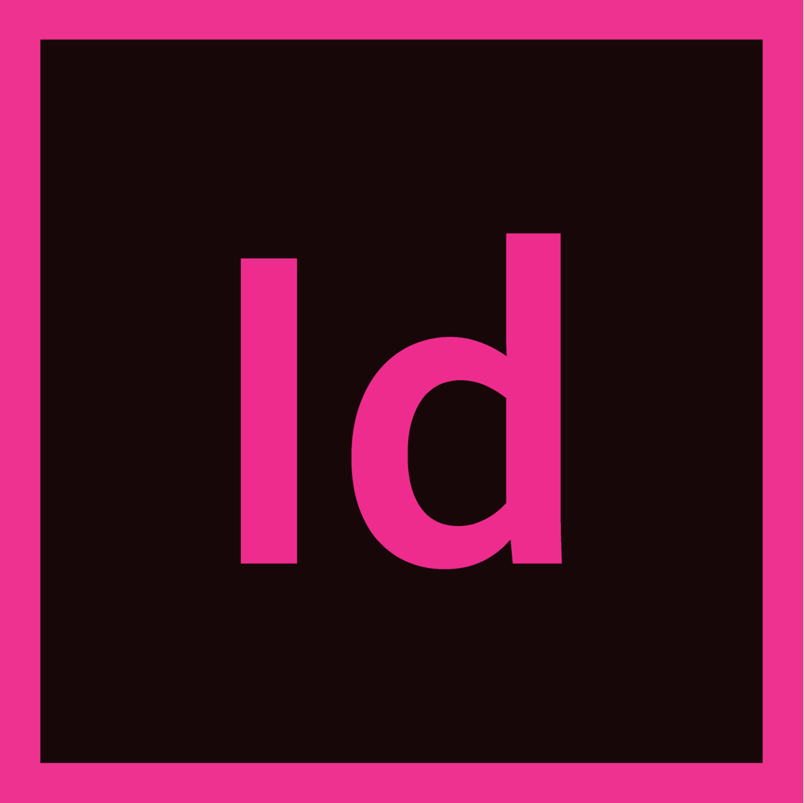

Luis Palma
conocimientos - habilidades
- Tech Skills
- Java
- Habilidades
- Flexibilidad
- Adaptabilidad
- Resolución de problemas
- Comunicación
- Proactividad
- Mejoras de procesos
- Idiomas
- Inglés
- Otras competencias
- Microsoft Office (avanzado)
- SAP (usuario)
- Adobe Illustrator
- Adobe InDesign
- Adobe Photoshop

